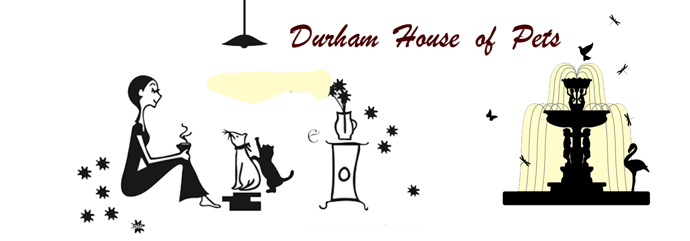

| About Us | Our Team | Products | Policies | Contact Us |
|  | |||||
HistoryDurham House of Pets was founded in 1989 by Chuanquan Xu. He started this company since he was 18. The company mainly sells some pet snacks and health care. It was a very small company in the beginning, however, there are more and more people and college students have pets, and this company is the only one for pets in Durham. Thus, the company made a lot of profit. Nowadays, the company is selling pet clothing, toys, snacks and better health care than before. And, the company accept foster pets. The company offers a variety of pet services, and getting more and more popular. |
Why choose us?Durham House of Pets was founded in 1989, and has been developing about 29 years. This company can provide better service to customers because they are experienced. Most of the employee in the store are pet experts. They can keep pets healthy and they can also train pets to make them more obedient. This brings convenience to their owners. In addition, Durham House of Pets is the only company for pets in Durham, it’s convenient for residents and students and there are quality services. So of course, this company would be the first choose of customers. |
Copyright©2007 Durham House of Pets | |||